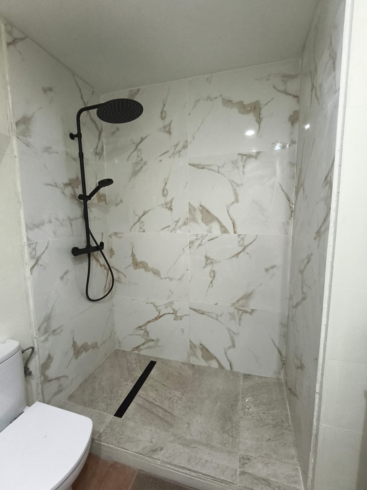
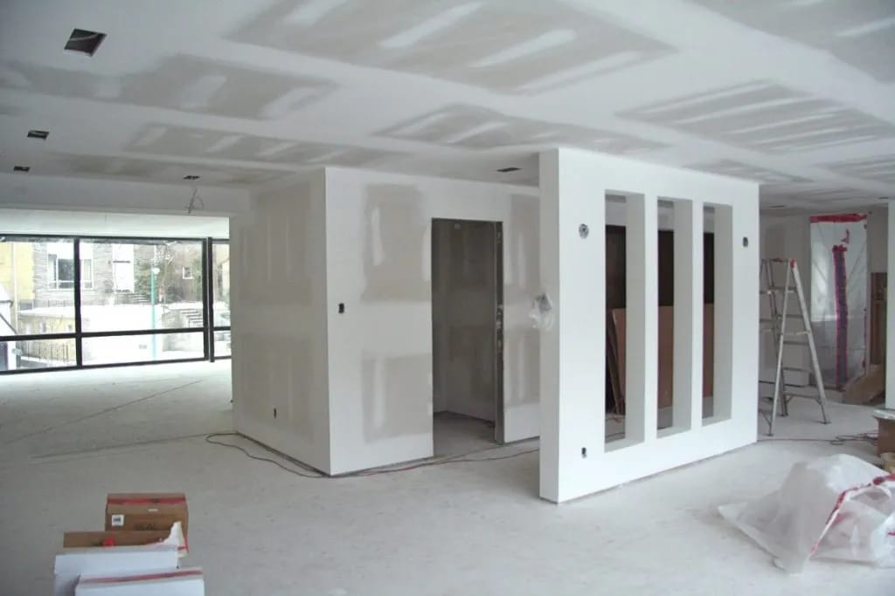
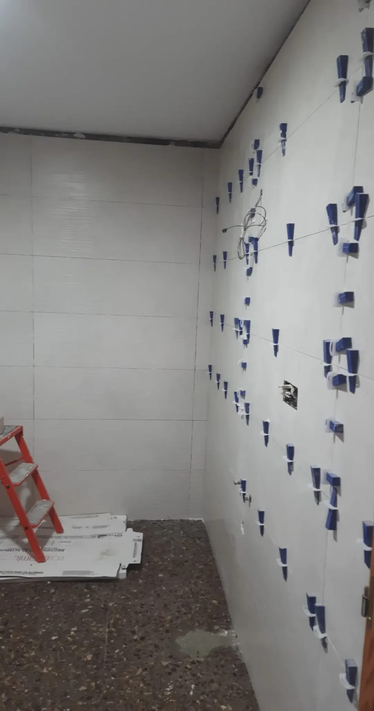
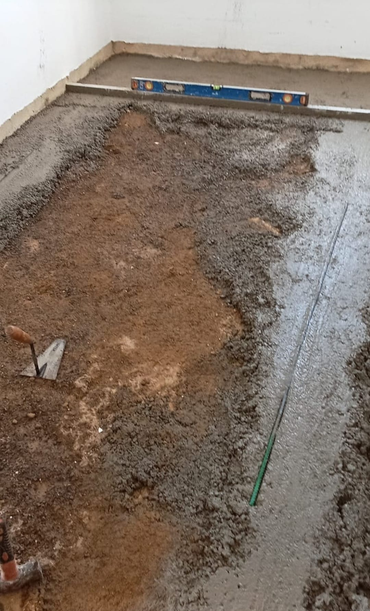
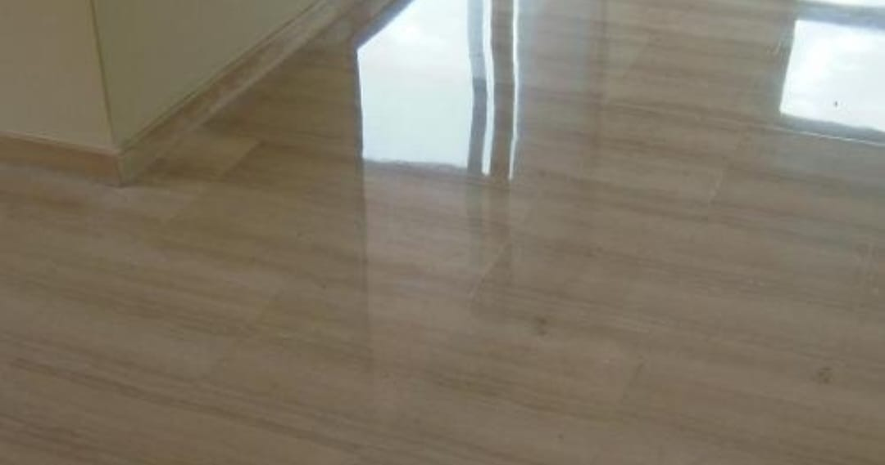
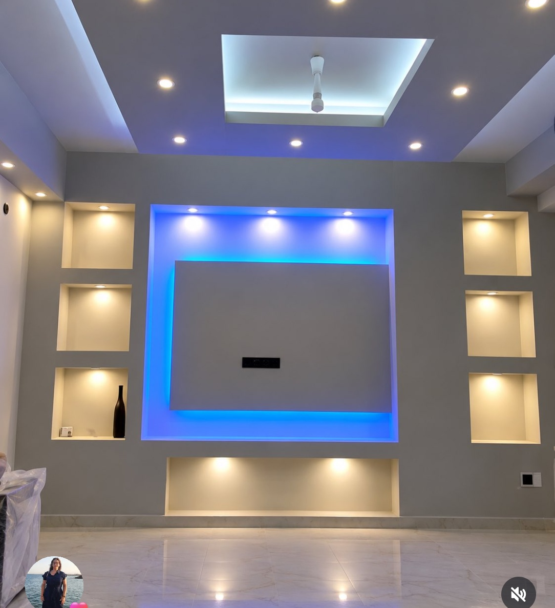

Nuestros Trabajos en Ejecución
Imágenes reales tomadas directamente en nuestras obras de Valencia: precisión en colocación, pladur técnico, fontanería y soleras niveladas.

Baño de AutorDucha de Gran Formato con Vetas de Mármol
Plato de resina a ras de suelo con desagüe lineal oculto, grifería empotrada en negro mate y porcelánico rectificado.

Pladur TécnicoTabiquería y Pasos de Luz en Pladur
Montaje de tabiquería con perfilería galvanizada reforzada y huecos arquitectónicos para cristaleras interiores.

Alicatado de PrecisiónAlicatado con Cuñas Autonivelantes
Proceso de nivelación milimétrica para evitar cejas y garantizar planos 100% lisos en paredes porcelánicas.
 Exterior & Chalets
Exterior & Chalets
Pérgola Metálica & Cerramiento Exterior
Estructura para porche exterior en vivienda unifamiliar, anclada sobre solera de hormigón reforzado.
 Cambio de Bañera
Cambio de Bañera
Sustitución de Bañera por Ducha en 48h
Plato de resina antideslizante con textura de pizarra, alicatado coordinado y grifería monomando termostática.

Albañilería de BaseNivelación y Recrecido de Soleras
Regleado milimétrico con nivel de burbuja para garantizar que el suelo posterior asiente con máxima estabilidad.

PavimentosPavimento Continuo Porcelánico Brillante
Suelo continuo de gran formato con acabado espejo y rodapié empotrado lacado.

Diseño LEDFrente de Salón & Fosa LED Perimetral
Estructura en pladur para televisión, fosa de luz azul regulable y 6 hornacinas decorativas iluminadas.